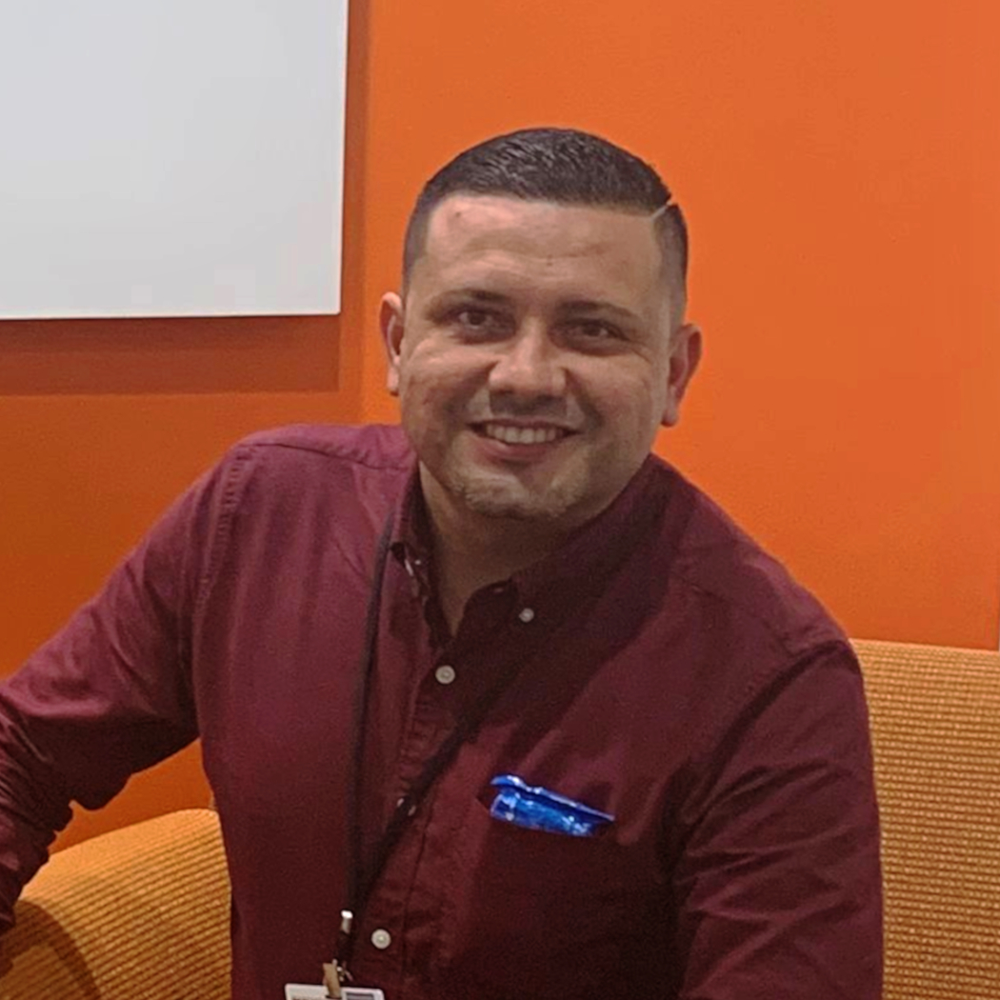

Luis J. Padin Vélez
HC 52 Box 2343, Garrochales P.R. 00652
Cellular: (939) 312-5978 Email: luis.padin2010@gmail.com
SALES / ACCOUNT-MANAGEMENT
Procurement & Inventory ∙ Logistics ∙ Warehouse Operations ∙ Customer Service ∙ Promotional Programs Strategic Planning ∙ P&L Reports ∙ Category Management ∙ Staff Supervision / Training Competitive Edge
Top performance, validated by multiple awards and double-digit results, strong initiatives to surpass sales and profit goals, and reducing Non-Value-Added
Profile
Enthusiastic and dedicated, with vast experience at management in multiple stores. Highly adaptable, professional with experience working with people of different backgrounds and learning needs. Able to adapt to changing circumstances. Highly dedicated to supporting all aspects of good costumer services and overall well-being, by being the best possible support to my colleagues.
Education
2010 Bachelor's Degree in Surveying and Cartography (B.S).
Polytechnic University of Puerto Rico
Hato Rey Campus, PR
Professional Experience
Walmart Puerto Rico Assistant Manager 2012 to Present
- Supervise up to 60 associates per shift in one of the top selling stores in the nation.
- Accountabilities: P&L, inventory control, loss prevention, revenue growth, customer service, cash management, replenishment, bank deposits,performance evaluations, recruitment and selection, training, schedules,work plans, meetings, claims and operational reports.
- Review P&L toidentify areas of opportunity and safeguard financial performance.
- Oversaw the special orders process after Hurricane Maria.
- Purchased nine grocery containers to meet consumerdemand.
- Assumed the responsibility to reduce overstock by 60%, eliminating the temporary container stockroom in a short period.
- Participated inseveral community events.
- Controlled store traffic (in/out).
- Coordinated over 30 Seasonal promotions.
- #1 in cosmetics sales (product bags for Mother's Day)
- Exceeded salesconsistently by 6-7%.
- Crafted and oversawlogistics for the Black Friday event.
- Directed the store relocation with $5M in inventory.
- Outlined a new warehouse layout improving access.
- In charge of the annual inventory.
- Created an Excelspreadsheet to define daily/weekly department functions.
- Led the CosmeticsDepartment conversion from product display to regular counter reducing shrinkage by 50%+.
- Drove severalpromotional changes and identified hot items assertively.
- Introducedcoffee with large sales volume and 40% margin.
- Promoted three Great Value Products selling three containers in 15 days.
- Maximized workschedules and eliminated overtime costs of 15 associates.
- Mentored anddeveloped over 30 associates into supervisory-level positions.
- Established containerunloading procedures to reduce cycle time by >50%.
- Collaborated in storeplanning and improvement of other locations including three store-openings.
- Won island-wide awardfor the product with most sales.
- Acting Store Manageron numerous occasions.
Walmart Puerto Rico Department Manager 2003 to 2012
- Led and supervisedseveral departments: Electronics, Grocery, Chemicals, Hardware/Paints, Candy and Point of Sale.
- Supervised up to 15associates and submitted purchase orders directly to vendors.
- Increased sales by20-5% in all departments.
- Worked in severalstore openings.
- Oversaw andimplemented promotional events.
- Participated inspecial teams in preparation for corporate visits.
- Simplified severalreports to expedite sales performance evaluations.
- Engaged in multiplecommunity events in alliance with non-profit organizations, community events in alliance with non-profit organizations.
TECH-Solution PR Surveyor Assistant 2010 to 2013
- Aided the land surveyor and 10+ engineers in land measurements, segregation
- As-Built Plans, replanting and drawings for multiple projects: several farms up to 700 acres, 10-acre shopping mall, multiple roads, properties and factories.
- Gathered GPS data and managed AutoCAD and ArcGIS software.
- Worked on machine leveling and alignment.
- Collaborated in the selection and acquisition of GPS equipment.
- Monitored equipment maintenance and purchases (equipment and supplies) for expense control.
Skills
Good command of the Computer (Microsoft Office, Word, Works, AutoCAD, ArcGis, Geomedia Professional, GPS, Internet and its Applications), knowledge in cash register, fast learner, oriented to work with the public, organized, creative, responsible and punctual person with good interpersonal relationships. Ability to establish priorities and to adapt to changes. Finally, knowledge of the English language.
Recognitions
Associate of the Month, Best Selling Employee, Employee of Excellence, Recognition for Cooperation, Department Manager of the Year, Recognition for Collaboration.
References
Available upon request